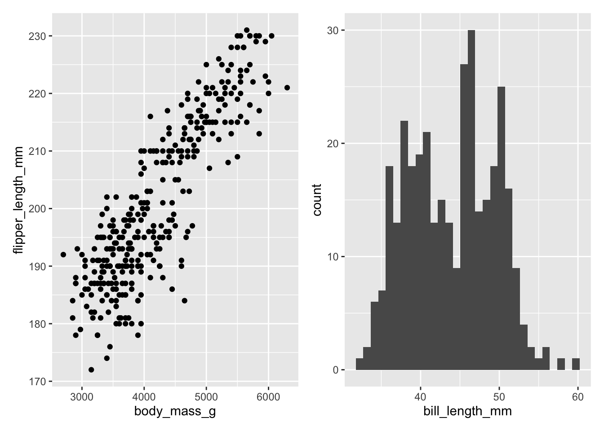
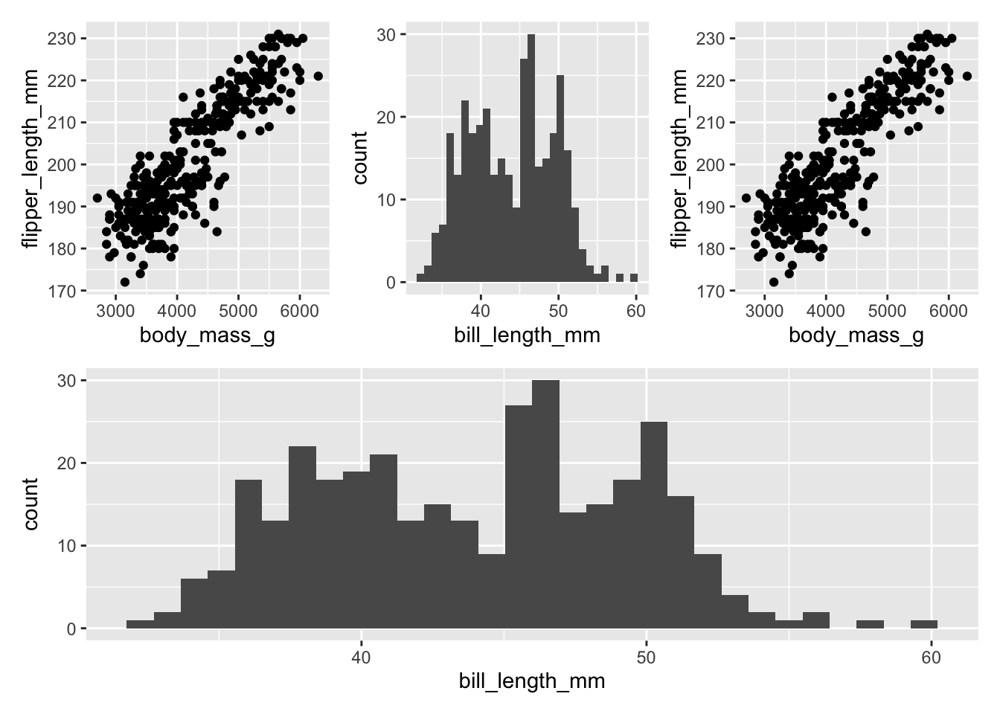
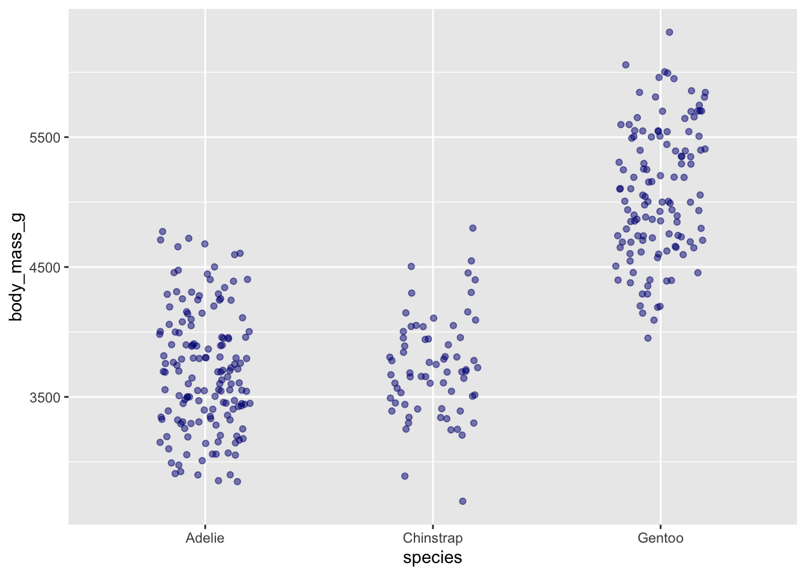

library(tidyverse)
library(patchwork)
library(kableExtra)
library(palmerpenguins)
library(reprex)day9_interactive
Warmup
#in penguins keep columns species, islands, sex, body mass, and flipperlength
#filter to include chinstrap and gentoo
#rename species column to penguin_species
# create a summary table that contains the mean of body mass, mean of flipper length, and the total count of observations each by species and sex
penguins_mean <- penguins %>%
select(species, island, sex, body_mass_g, flipper_length_mm) %>%
filter(species %in% c("Chinstrap", "Gentoo")) %>%
rename(penguin_species = species) %>%
group_by(penguin_species, sex) %>%
summarise(mean_flipper_length_mm = mean(flipper_length_mm, na.rm = TRUE),
mean_body_mass_g = mean(body_mass_g, na.rm = TRUE),
sample_size = n())A few variations on dplyr::across()
#summary table for all numeric variables in penguins dataset by species
penguins_across <- penguins %>%
group_by(species) %>%
summarize(across(where(is.numeric), mean, na.rm = TRUE))#calculate the mean value of all columns that start with bill
penguins_bill <- penguins %>%
group_by(species, island) %>%
summarize(across(starts_with("bill"), mean, na.rm = TRUE))#return the minimum value of columns that end with "mm" grouped by island and year
penguins_mm <- penguins %>%
group_by(island, year) %>%
summarize(across(ends_with("mm"), min, na.rm = TRUE))# find and return mean and sd with all columns starting with bill grouped by penguin species and retunring a new name that combines original with function
# .names = "{.col}.{.fn}" = makes a new name for the column that is original column.function applied
penguins_mean_sd <- penguins %>%
group_by(species) %>%
summarize(across(starts_with("bill"),
list(mean, sd),
na.rm = TRUE,
.names = "{.col}.{.fn}"))Make a table look better kable and kableExtra
#make my table
penguins_table <- penguins %>%
group_by(species, sex) %>%
summarize(mean_mass = mean(body_mass_g, na.rm = TRUE),
sd_mass = sd(body_mass_g, na.rm = TRUE)) %>%
kable(col.names = c("Species", "Sex", "Mean body mass (g)", "SD body mass (g)")) %>%
kable_styling(full_width = FALSE)
penguins_table| Species | Sex | Mean body mass (g) | SD body mass (g) |
|---|---|---|---|
| Adelie | female | 3368.836 | 269.3801 |
| Adelie | male | 4043.493 | 346.8116 |
| Adelie | NA | 3540.000 | 477.1661 |
| Chinstrap | female | 3527.206 | 285.3339 |
| Chinstrap | male | 3938.971 | 362.1376 |
| Gentoo | female | 4679.741 | 281.5783 |
| Gentoo | male | 5484.836 | 313.1586 |
| Gentoo | NA | 4587.500 | 338.1937 |
Patchwork Package
chart1 <- penguins %>%
ggplot(aes(x = body_mass_g, y = flipper_length_mm)) +
geom_point()chart2 <- penguins %>%
ggplot(aes(x = bill_length_mm)) +
geom_histogram()chart1 + chart2
(chart1 + chart2 + chart1) / chart2
ggplot(penguins, aes(x = species, y = body_mass_g)) +
geom_jitter(width = 0.2, alpha = 0.5, color = "navy")